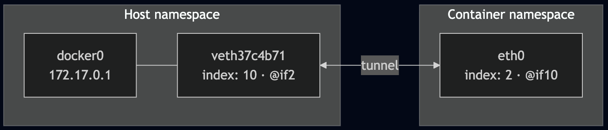
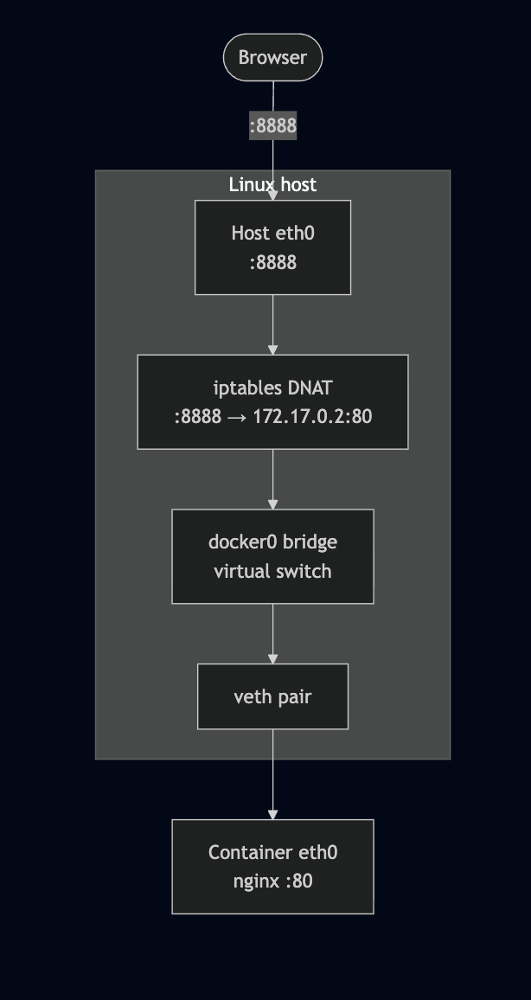
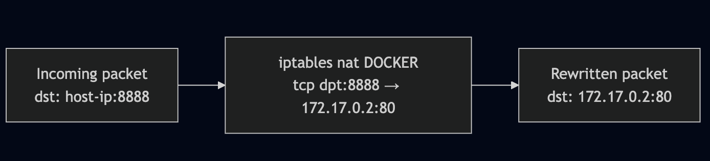

Series: Container Networking Deep Dive
- Demystifying Docker Networking: A Deep Dive into Bridge & veth (You are here)
- Demystifying Docker Networking Egress: The Masquerade Magic
- Demystifying CNI: When Kubernetes "Borrows" Plugins to Build Its Network
- How Cilium CNI works in K8S (In coming)
I guess I'm not the only one who gets confused with Docker networking. Let's try to understand it better!
Prerequisites
- Ubuntu 24.04
- Docker installed.
- Bridge Utils:
apt install bridge-utils -y
Bridge Network flow
I think I will only talk about this, since this is default network in docker.

Let's get started:
docker run -d -p 8888:80 --name nginx-demo nginx
Expected output:
root@kienlt-lab-utilities:~# docker ps
CONTAINER ID IMAGE COMMAND CREATED STATUS PORTS NAMES
67b80460a739 nginx "/docker-entrypoint.…" 2 seconds ago Up 2 seconds 0.0.0.0:8888->80/tcp, [::]:8888->80/tcp nginx-demo
Haha, I was having a hard time to understand which is container port and which is host port. But it is pretty simple, you just need to remember that the format is host_port:container_port, it means you will access nginx container from outside of the container using host_port, and inside the container, the nginx is running on container_port.
TLDR: if we have request access to port 8888, docker will throw that damn request to port 80 inside the container.
Verify by this command below:
root@kienlt-lab-utilities:~# docker port nginx-demo
80/tcp -> 0.0.0.0:8888
80/tcp -> [::]:8888
Why request from port 8888 can be forwarded to port 80 inside the heck container? It is iptables, hmm I thought it was used only for drop/accept like a firewall. But it is not, it can be used for port forwarding too. Let's check the iptables rules:
# To view full rule of Docker, remove that grep.
root@kienlt-lab-utilities:~# iptables -t nat -L DOCKER -n|grep 8888
DNAT 6 -- 0.0.0.0/0 0.0.0.0/0 tcp dpt:8888 to:172.17.0.2:80
Let's break down the rule above:
- DNAT: Destination Network Address Translation
- 6: protocol (tcp)
- 0.0.0.0/0: source ip (any ip)
- 0.0.0.0/0: destination ip (any ip)
- tcp dpt:8888: destination port (8888)
- to:172.17.0.2:80: destination ip and port (172.17.0.2:80)
Hmm, where is the ip 172.17.0.2 comes from?
root@kienlt-lab-utilities:~# docker inspect -f '{{range .NetworkSettings.Networks}}{{.IPAddress}}{{end}}' nginx-demo
172.17.0.2
Flow summary:
- User sends request to:
http://host-ip:8888 - Host kernel receives the packet, sees destination port 8888
- iptables DNAT rule rewrites destination to
172.17.0.2:80 - The packet is forwarded to docker0 bridge
- Packet travels through a
veth pairinto the container's network namespace - nginx receives it on port 80
Hmmm, how Bridge (docker0) and veth works?
Before running any commands, here's the full picture of what we're about to explore:

What is veth? It is a virtual ethernet pair, it is like a tunnel between two network namespaces.
What is Network Namespace (netns)? It is a feature of Linux kernel that allows you to create isolated network environments.
There are 3 keys component that need to be understood:
docker0: virtual bridgeveth pair: 2 way tunnel, 1 plugged into docker0, 1 plugged into containerNetwork Namespace: the reason why container have it's owneth0interface, complete isolated with host network
Verifying the Bridge and veth Pairs
We mentioned docker0, let's check it. (I have more than 1 container running, so you probably see more than 1 veth)
root@kienlt-lab-utilities:~# brctl show
bridge name bridge id STP enabled interfaces
br-2a065d00678a 8000.7687adb1e805 no vethf6114a2
br-bf86e395575b 8000.72f5de7a4fae no vethfc36c96
br-c1027faa9820 8000.6a557a38506a no veth11ad843
docker0 8000.fa5bcf9b5087 no veth37c4b71
veth37c4b71 is the host-side end of the tunnel connected to our container.
Let confirms with ip link
root@kienlt-lab-utilities:~# ip link show master docker0
10: veth37c4b71@if2: <BROADCAST,MULTICAST,UP,LOWER_UP> mtu 1500 qdisc noqueue master docker0 state UP mode DEFAULT group default
link/ether 3a:e0:83:b9:4e:7b brd ff:ff:ff:ff:ff:ff link-netnsid 3
Notice veth37c4b71@if2 — the @if2 means this interface is paired with interface index 2 on the other side (inside the container).
Network Namespaces (netns)
Each container runs in its own network namespace. Let's inspect it to confirm the veth pairing.
We can list all netns with ip netns list
root@kienlt-lab-utilities:~# ip netns list
root@kienlt-lab-utilities:~#
"Why are you lying? there is no netns here?" Don't worry bro, I will explain why!
root@kienlt-lab-utilities:~# man ip-netns
You will see a section like this, I'm showing from manual page, so no need external link xD
ip netns list - show all of the named network namespaces
This command displays all of the network namespaces in /run/netns
Ok, let's check in /run/netns and /var/run/netns. Wait a minute? why /var/run/netns, in man page haven't mentioned it?
Here you go bro, in Ubuntu /var/run is a link that pointed to /run
root@kienlt-lab-utilities:~# ll /var/run
lrwxrwxrwx 1 root root 4 Feb 17 2025 /var/run -> /run/
root@kienlt-lab-utilities:~# ll /run/netns
ls: cannot access '/run/netns': No such file or directory
root@kienlt-lab-utilities:~# ll /var/run/netns
ls: cannot access '/var/run/netns': No such file or directory
To make it show properly in there, we will need to do some trick, why trick? This is only for learning purpose, in facts Docker doesn't expose netns to /run/netns due security.
# 1. Find PID of container
PID=$(docker inspect -f '{{.State.Pid}}' nginx-demo)
# 2. Create netns directory because it is not exists
sudo mkdir -p /var/run/netns
# 3. Soft link namespace of container to /var/run/netns
sudo ln -sf /proc/$PID/ns/net /var/run/netns/nginx-demo-ns
# 4. Check again - Now it will show up!
ip netns list
## expected output
nginx-demo-ns (id: 3)
##
Look inside the container's network namespace
Check veth pairing
root@kienlt-lab-utilities:~# sudo ip netns exec nginx-demo-ns ip link show eth0
2: eth0@if10: <BROADCAST,MULTICAST,UP,LOWER_UP> mtu 1500 qdisc noqueue state UP mode DEFAULT group default
link/ether 42:17:5a:54:f2:c4 brd ff:ff:ff:ff:ff:ff link-netnsid 0
Important output: eth0@if10, if10 is the other side of the veth pair, it is connected to docker0 bridge. So let see all network interface in Host, who the fuck has index 10?
I want to prove: eth0 inside container is paired with veth37c4b71 outside, network host.
root@kienlt-lab-utilities:~# ip link | grep ^10:
10: veth37c4b71@if2: <BROADCAST,MULTICAST,UP,LOWER_UP> mtu 1500 qdisc noqueue master docker0 state UP mode DEFAULT group default
Hmm, it is veth37c4b71 and you see master docker0 which means it is plugged into the docker0 bridge. Ok what is @if2 in veth37c4b71@if2? I would type this command again to prove it is linked with each other.
root@kienlt-lab-utilities:~# sudo ip netns exec nginx-demo-ns ip link show eth0
2: eth0@if10: <BROADCAST,MULTICAST,UP,LOWER_UP> mtu 1500 qdisc noqueue state UP mode DEFAULT group default
link/ether 42:17:5a:54:f2:c4 brd ff:ff:ff:ff:ff:ff link-netnsid 0
You see index 10 (if10)? It is the other side of the veth pair.
Hmm, let me tell you what is interface index
root@kienlt-lab-utilities:~# ip link
1: lo: <LOOPBACK,UP,LOWER_UP> mtu 65536 qdisc noqueue state UNKNOWN mode DEFAULT group default qlen 1000
link/loopback 00:00:00:00:00:00 brd 00:00:00:00:00:00
2: eth0: <BROADCAST,MULTICAST,UP,LOWER_UP> mtu 1500 qdisc mq state UP mode DEFAULT group default qlen 1000
link/ether fa:16:3e:36:85:01 brd ff:ff:ff:ff:ff:ff
altname enp0s3
altname ens3
3: docker0: <BROADCAST,MULTICAST,UP,LOWER_UP> mtu 1500 qdisc noqueue state UP mode DEFAULT group default
link/ether fa:5b:cf:9b:50:87 brd ff:ff:ff:ff:ff:ff
4: br-c1027faa9820: <BROADCAST,MULTICAST,UP,LOWER_UP> mtu 1500 qdisc noqueue state UP mode DEFAULT group default
link/ether 6a:55:7a:38:50:6a brd ff:ff:ff:ff:ff:ff
5: veth11ad843@if2: <BROADCAST,MULTICAST,UP,LOWER_UP> mtu 1500 qdisc noqueue master br-c1027faa9820 state UP mode DEFAULT group default
link/ether ee:e7:24:2f:ca:b5 brd ff:ff:ff:ff:ff:ff link-netnsid 0
6: br-2a065d00678a: <BROADCAST,MULTICAST,UP,LOWER_UP> mtu 1500 qdisc noqueue state UP mode DEFAULT group default
link/ether 76:87:ad:b1:e8:05 brd ff:ff:ff:ff:ff:ff
7: vethf6114a2@if2: <BROADCAST,MULTICAST,UP,LOWER_UP> mtu 1500 qdisc noqueue master br-2a065d00678a state UP mode DEFAULT group default
link/ether ea:85:60:ef:33:a4 brd ff:ff:ff:ff:ff:ff link-netnsid 1
8: br-bf86e395575b: <BROADCAST,MULTICAST,UP,LOWER_UP> mtu 1500 qdisc noqueue state UP mode DEFAULT group default
link/ether 72:f5:de:7a:4f:ae brd ff:ff:ff:ff:ff:ff
9: vethfc36c96@if2: <BROADCAST,MULTICAST,UP,LOWER_UP> mtu 1500 qdisc noqueue master br-bf86e395575b state UP mode DEFAULT group default
link/ether 5e:e7:47:ac:9c:a2 brd ff:ff:ff:ff:ff:ff link-netnsid 2
10: veth37c4b71@if2: <BROADCAST,MULTICAST,UP,LOWER_UP> mtu 1500 qdisc noqueue master docker0 state UP mode DEFAULT group default
link/ether 3a:e0:83:b9:4e:7b brd ff:ff:ff:ff:ff:ff link-netns nginx-demo-ns
so inside container, interface eth0 is linked with veth37c4b71@if2 which have interface index is 10. And veth37c4b71@if2 is linked with docker0 bridge.
Visualizing the pairing

You can use this command to see it more clearly
root@kienlt-lab-utilities:~# ip netns exec nginx-demo-ns ethtool -S eth0
NIC statistics:
peer_ifindex: 10 # This is 10th interface in host
...
# Run this shit
root@kienlt-lab-utilities:~# ethtool -S veth37c4b71
NIC statistics:
peer_ifindex: 2 # This is 2nd interface in container
...
Why we need this fucking veth pair? Because Network Namespace is isolated, so we need a tunnel to connect them.
Docker-Proxy
In this article, I haven't mentioned any keyword related to "docker-proxy". Why?
It works together with iptables but have lower priority. In essence, networking stack of Linux handle packet at kernel level before it has a chance to processed by docker-proxy in User-space. So if iptables process the packet, the packet will go to container directly without passing through docker-proxy. If packet does not match any rule in iptables, it will go to docker-proxy to process for edge case like traffic from localhost itself.
Why it is created? to solve what problem?
We maybe noticed or never notice (like me), there is a process docker-proxy for each published port. Let run in my server to see what are they
root@kienlt-lab-utilities:~# ps -ef | grep docker-proxy
root 538366 399324 0 Mar15 ? 00:00:00 /usr/bin/docker-proxy -proto tcp -host-ip 0.0.0.0 -host-port 8888 -container-ip 172.17.0.2 -container-port 80 -use-listen-fd
root 538372 399324 0 Mar15 ? 00:00:00 /usr/bin/docker-proxy -proto tcp -host-ip :: -host-port 8888 -container-ip 172.17.0.2 -container-port 80 -use-listen-fd
Why are they created? To solve some edge case (Source here)
- localhost<->localhost routing
- docker instance calling into itself via its published port
- And more...
Docker issue:
- https://github.com/docker/docker/issues/8356
- https://github.com/moby/moby/issues/11185
So at this time, Docker hasn't removed that feature yet but give user able to disable it to save some memory xD. I also like that approach, because it is better to have 100% working instead of 95% working but gain very little value by saving small memory.
Disable docker-proxy: Simple add or modify in /etc/docker/daemon.json
{
"userland-proxy": false
}
Then restart docker service and validate by:
root@kienlt-lab-utilities:~# ps -ef|grep docker-proxy
root 559752 558312 0 11:37 pts/0 00:00:00 grep --color=auto docker-proxy
Conclusion
I hope this post help you understand how docker networking works.